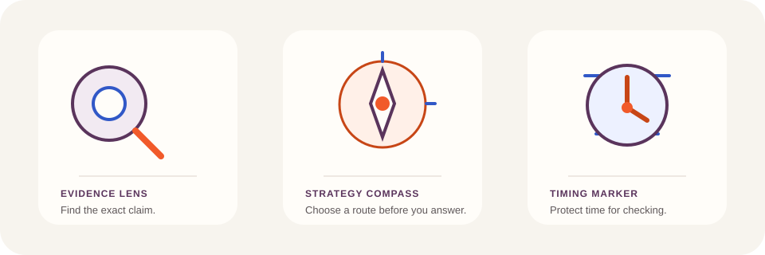

A
Orange + restrained cobalt
Direct and recognisable; closest to V2.
IE · B2
Assessment group
✓CorrectEvidence found
Visual systems laboratory
Three supporting-colour relationships, two four-skills compositions and one coordinated family of controls, surfaces and purpose-led marks.
Supporting colour comparison
V3 recommends B: aubergine/plum gives the master product an editorial supporting voice while cobalt remains an unmistakable, restrained IELTS identifier. Semantic states stay independent.
Direct and recognisable; closest to V2.
Assessment group
Recommended V3 relationship; cobalt is course-only.
Assessment group
Composed and contemporary; risks audio association.
Assessment group
#F15A2A#BD4013#FFF0E8#5A345C#3158C7#EAF0FF#F7F4EE#FFFDF9#171714#5E5759#157347#B42318#855600#40566F| Foreground | Background | Ratio | Use |
|---|---|---|---|
| #FFFFFF | #BD4013 | calculating | Primary action |
| #171714 | #FFFDF9 | calculating | Primary text |
| #5E5759 | #FFFDF9 | calculating | Secondary text |
| #412242 | #F2EAF2 | calculating | Supporting labels |
| #183A86 | #EAF0FF | calculating | IELTS identity |
Four-skills illustration alternatives
Both are original, responsive SVG studies. The live V3 lesson uses Alternative A; both remain open for visual review.


Purpose-led vector family
Every symbol has a teaching or navigation role. Informative instances receive a name; decorative repetitions are hidden from assistive technology.



Controls, states and depth
Reading remains flat. Temporary navigation and control groups gain measured translucency and depth.
Instructions clarify the task .
The overall band .
Flat porcelain and paper; whitespace creates hierarchy.
Callouts, resources and focused teaching moments.
Breadcrumbs, media controls and compact navigation.
Sticky course maps, dialogs and feedback summaries.
Layout is reserved while the secure question payload loads.
Your lesson remains available. Add practice when it supports the objective.
Your response is still safe. Try opening the resource again.